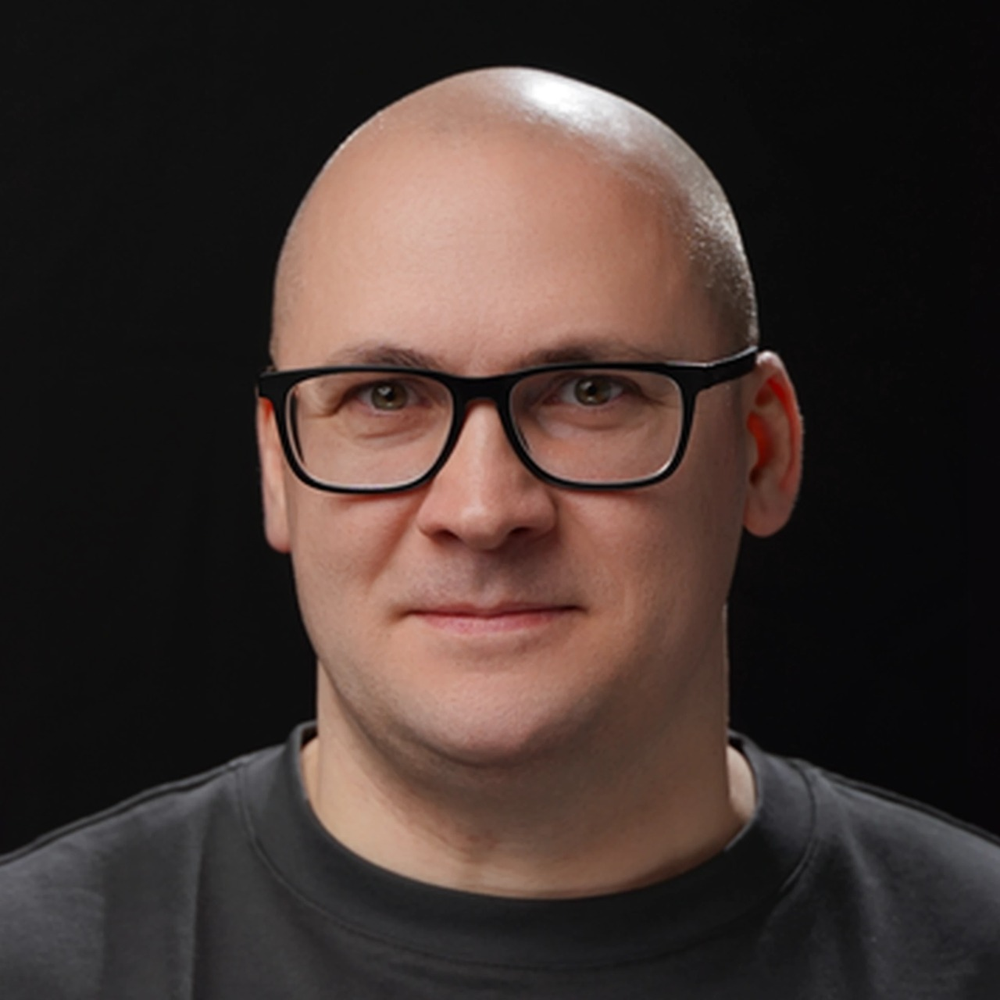
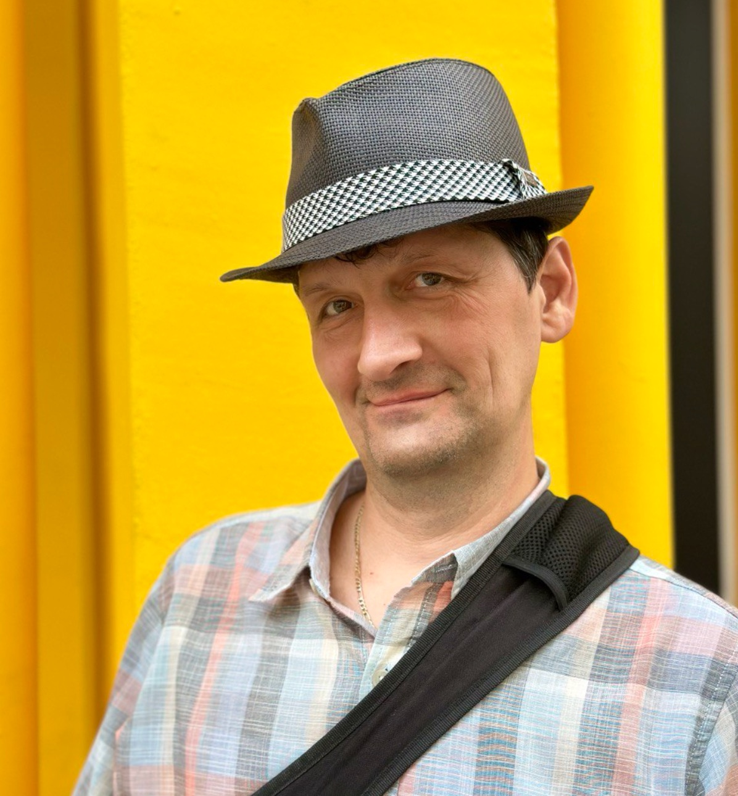
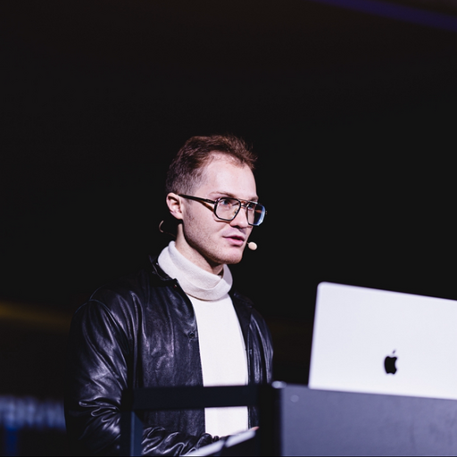
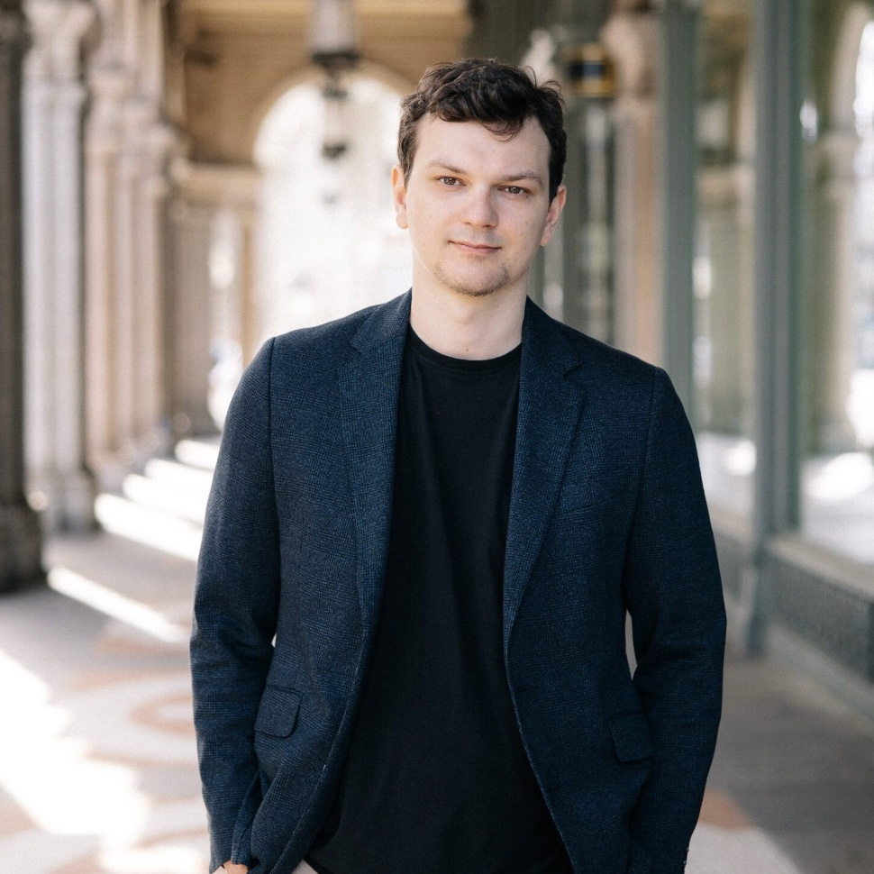
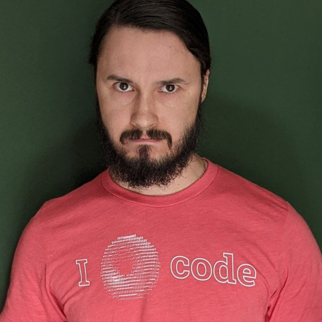

Новые AI модели и инструменты выходят каждую неделю, городские сумасшедшие хоронят программирование, а кто-то, обложившись десятком агентов, создает супер-успешные проекты. Как с этим жить, решительно непонятно.
Мы собрали закрытое сообщество инженеров, которые верят в то, что их профессия меняется, и хотят научиться использовать новые инструменты себе на пользу. Каждую неделю мы проводим воркшопы и разборы с экспертами, которые уже используют AI в реальных проектах. Между встречами – закрытый чат, клубные созвоны, и дополнительные воркшопы.
Подлодка – подкаст про технологии, который выходит уже 8 лет. Мы постоянно общаемся с людьми на острие индустрии и видим, как сильно AI меняет профессию. Чтобы рассказать, как работать и получать удовольствие в новой эпохе, подкаста и конференций недостаточно – поэтому мы и создали этот клуб, обмен знаниями в котором происходит гораздо быстрее.
Если вы хотите обсудить любые вопросы про сообщество Podlodka AI Engineers – пишите Егору Толстому.
У инженеров, которые начинают серьёзно работать с AI, обычно два вопроса.
«Как перестроить мой личный воркфлоу?»
Разбираем тулинг: Claude Code, Cursor, JetBrains AI, Conductor – что когда использовать, как настроить под себя, как сочетать с ручным написанием кода. Как выстроить фидбэк-луп, чтобы агент не повторял одни и те же ошибки. Скиллы – готовые и свои. Как координировать сразу несколько агентов. Как отдать AI длинную задачу и не потерять контроль.
«Как перестроить работу команды?»
Как шарить агентские воркфлоу и поддерживать общие гайдлайны. Как ревьюить код, который написал не человек. Как обучать джунов в новой реальности. Как писать своих агентов – для рефакторинга, QA, генерации UI. Безопасность и качество AI-кода. Оркестрация на больших задачах.
Это – общие направления, про которые мы говорим в сообществе, но конкретные темы выбираем вместе с участниками.





Клуб только запустился, и каждую неделю мы продолжим приглашать новых экспертов с прикладным опытом в темах, интересных сообществу.
Вам сюда, если вы опытный инженер, который построил не одну продакшн-систему, сделал много ошибок и отрефлексировал их. Вы понимаете, что индустрия уже изменилась, и хотите меняться вместе с ней – экспериментировать, пробовать, перестраивать привычки. И вы не ждёте от AI магии – вы понимаете, что это набор новых парадигм и инструментов, которые нужно научиться правильно применять.
Сообщество организуется только с марта 2026 года, и начинается с небольшой группы участников. Мы будем расти постепенно, чтобы сохранять ламповость и вовлеченность всех в происходящее.
Клуб закрытый – мы верим в важность модерации в таких сообществах. Попасть можно двумя способами: записаться в список ожидания или получить инвайт от текущего участника.
Вы оставляете заявку, мы смотрим на ваш бэкграунд, и если видим, что вы подходите по профилю – присылаем приглашение с доступом. Оплата $30/мес начинается только после принятия.
Podlodka Crew – интенсивы, которые запускаются несколько раз в год. Они полезны тем, кто хочет максимально погрузиться в какую-то конкретную тему за ограниченное время.
Сообщество Podlodka AI Engineers – для тех, кто считает для себя AI основным вектором развития, хочет постоянно получать новые знания и применять их на практике. Мир меняется настолько быстро, что никакие интенсивы не заменят ежедневного метода проб и ошибок, и сообщества единомышленников, готового помочь.